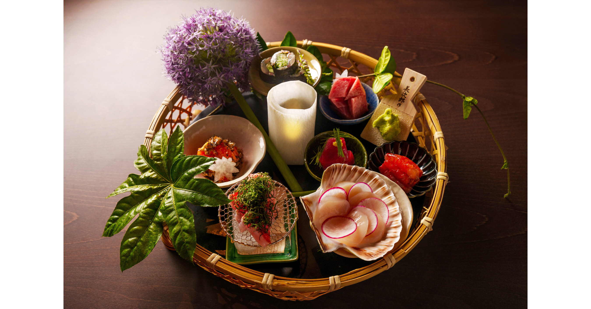

Mixed-Use Restaurant & Residential Design — Celebrity Chef Makoto Okuwa | Hayes Valley, San Francisco
Course: ARCH X483 Building Components and Systems
Role: Student Designer
Location: Hayes Valley, San Francisco
Status: Academic Project | UC Berkeley | Spring 2026

Design a multi-level mixed-use interior environment in San Francisco's Hayes Valley neighborhood, combining a ground-floor contemporary Japanese restaurant concept for celebrity chef Makoto Okuwa with a private residential apartment, rooftop amenities, and a community library — addressing the distinct spatial, material, and systems needs of commercial hospitality and private residential living within a single building.
Makoto Okuwa is a Japanese master sushi chef and restaurateur recognized for bringing luxury omakase dining to the United States. Known for founding O Ya and Oishii Boston, his design preferences center on contemporary Japanese minimalism — clean, refined interiors with natural materials, intimate chef's counter experiences, soft warm lighting, and spaces where food is the star.
The interior design concept responds to his priorities: tradition balanced with modern vibrancy, minimal and intentional spaces, and an elegant, uncluttered environment centered around the art of sushi.
The building program spans four levels plus a rooftop, organized by area function:
An open amenity space with warm wood ceiling, comfortable lounge seating, natural light from floor-to-ceiling glazing, and seamless indoor-outdoor flow to a rooftop patio.
A reading and study space featuring bookshelves as spatial dividers, communal tables with task lighting, and glazed walls connecting to nature views. Designed for quiet community engagement and intellectual gathering.
A double-height living space with exposed brick feature wall, open staircase to the mezzanine, floor-to-ceiling glazing for natural light, and a visible kitchen beyond. The material palette combines hardwood flooring, brick, and contemporary furnishings for warmth and character.
The Hayes Street facade uses a carefully selected material palette:
Designed a bar environment emphasizing warm hospitality with a layered material approach:
Developed sketch lighting plans for both restaurant floors, selecting manufacturer fixtures for specific spatial zones:
Coordinated HVAC supply and return diffusers with the lighting plan, selecting Titus TMS 24"x24" square ceiling supply diffusers and Titus 350RL return grilles. Diffusers were placed to align with ceiling grids and offset from feature lighting fixtures, with thermostat locations on accessible interior walls.
Selected manufacturer furniture for the residential apartment including:
Designed a modern spa-like master bathroom with gray/white linear wall tile, darker accent tub wall, warm wood double vanity, marble-look countertop, and matte black fixtures. Selected KOHLER Sunstruck freestanding tub, TOTO Drake toilet, and KOHLER Verdera oval mirror cabinet.
Investigated building-system requirements including wall assembly documentation (StoPowerwall with StoGuard air and water-resistive barrier), reflected ceiling plans coordinated with HVAC diffusers and lighting, and facade material performance specifications. Explored structural coordination between commercial and residential zones.
[Insert reflection on key learnings from this comprehensive multi-assignment project — how the sequential assignments built a complete understanding of building components, systems, and interior design documentation]